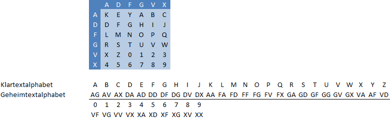
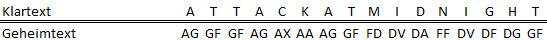

Das ADFGVX-Verfahren besteht aus einer Folge (Kaskade) von zwei Verschlüsselungs-Verfahren: einer Substitution und einer Transformation. ADFGVX wurde von den Deutschen im ersten Weltkrieg eingesetzt, aber schon nach kurzer Zeit von den Franzosen gebrochen.
Das ADFGVX-Verfahren ist ein zusammengesetztes Verfahren, aus bigraphischer Substitution und einfacher Spalten-Transformation.
Die ADFGVX-Verschlüsselung ist im ersten Teil eine monoalphabetische Subsitutions-Verschlüsselung, bei der jedem Element aus dem Klartextalphabet ein Element aus dem Substitutionsalphabet zugeordnet wird. Die Besonderheit ist, dass nur Paare aus den Buchstaben A, D, F, G, V und X die Elemente des Substitutionsalphabets bilden. Da bei einer Substitutions-Verschlüsselung die Anzahl der Elemente des Substitutionsalphabets nicht kleiner sein darf als die des Klartextalphabets, kann das Klartextalphabet höchstens 6x6 = 36 Zeichen enthalten.
Das Substitutionsalphabet wird durch das Ausfüllen der ADFGVX-Matrix dargestellt (s. Abbildung). Anstelle der Angabe des gesamten Matrixinhaltes, kann – wie bei der normalen monoalphabetischen Substitution – ein Schlüsselwort angegeben werden, an welches dann das restliche Alphabet angehängt wird (unter Löschung von doppelt auftretenden Buchstaben). Im Beispiel wurde das Schlüsselwort „KEY“ verwendet:

Eine beispielhafte Substitution des Textes „ATTACKATMIDNIGHT“ mit dem Schlüsselwort „KEY“ (s. obige Substitutionsmatrix/-tabelle):

Anschließend wird noch eine einfache Transposition (s. Artikel Spaltenweise Transposition) auf den substituierten Text angewendet. Dafür wird ein extra Schlüssel verwendet.
Falls eine Transposition durchgeführt wurde, muss diese zuerst rückgängig gemacht werden.
Danach wird der Geheimtext in Zweierblöcke aufgeteilt, und diese werden anhand der aus dem Schlüsselwort erstellten ADFGVX-Matrix zurück-substituiert.